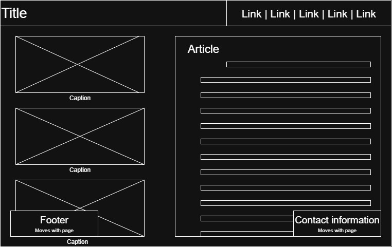
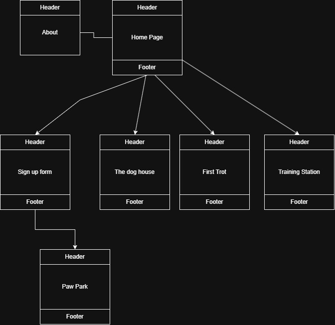

Project Overview: Raising Canines
The proposed application 'Raising Canines' is a hobbyist / instructional page that will provide information on raising dogs. Specific breeds and or accommodations will be mentioned however the goal is to include all dog owners. The site will go over popular breeds and their do's and don'ts as well as activities to strengthen pet bonds. Also what to do if your pet is sick or exhibiting unorthodox behaviors.
Recommended Users:
- Users who have / want pets (dogs)
- Users who want to learn about dogs
- Users wishing to upload pictures of their dogs / view other's pets.
Client Information
- Tiffany M Johnson
- Animal care hobbyist
- [redacted]
- [redacted]
Website Wireframe: Default Page

Site Map

Page Design
- Home Page
- To be an entry / landing page for the site, all audiences welcome
- The content will be a slideshow of dogs along with a short description of the site and its pages. Header and footer will also be included, no data will be asked for on this page. This page will have hyperlinks as navigation to other pages a slideshow element will alo be featured.
- First Trot
- To be an intro duction to dog raising including preparations before buying and first week activities. Some breeds and dogs may also need special care, special information will also be included. All audiences welcome
- The content on this page will be laid out like a timeline starting from before the adoption of a dog wo at least a week into ownership. Pictures will be present that can be clicked on to reveal a paragraph with information on what the user should do. The only form of intractability on the page will be through these images no data or internal links other than the nav bar.
- Training Station
- A page on training dogs behaviorally, all users welcome, no data will be needed
- This page will be about dog training, the best practices for most breeds and some special cases. This page will include citations to references that are used in the training of dogs. Once again pictures on the left side of the screen will be clickable to reveal more information / articles on the page topic.
- The Dog House
- A page for tips on housing dogs where their bed should be or whether or not they should be outside. All users welcome, no user input needed.
- This page will discuss information on dogs in the house how to deal with ripped up objects and or potty training as well as how to handle going to work and times when the dog will be alone. This page will exhibit the usual style of picture clicking and article loading as the others above.
- Sign up Page
- A page for gathering user information as well as photos of their pets for the slideshow, all users welcome, user input will be requested and fields like email, name, and a photo upload will be required.
- This page will be a large form dedicated to getting user information in the form of name and email, along with any facts they have and pictures of their pets to add to the gallery. The page should have the usual buttons of submit, reset, and clear which will submit data, reset data to defaults and clear all written data respectively. Lastly there will be a small window on the side used to preview what your contribution to the website will look like.
- Paw Park
- A page showing the slideshow of posted pet pictures, quotes, and facts. A user will be able to see these 'posts' and comment on them, all users will be welcome and buttons to forward or revers a slideshow will be present.
- This page will be a pseudo message board where photos uploaded in the sign up page will be displayed along with quotes and facts. Each 'post' will have a way to create comments on then which can be shown with a button click. Realistically while there will be some posts already in there, any new forms filled out on the sign up page will used JavaScript to save and load information on this page.
JavaScript Interactivity
All pages except the "sign up" page will implement JavaScript functionality similar to the previous hobby project except instead of using a top nave bar large captioned pictures will be the entry points. When a picture is clicked a new article containing relevant information will be loaded along with any lists or other pictures. Note: only pictures on the left half of the screen will be interactable, pictures loaded on the right side wont be. The closest website i can see that mimics my proposed style would be Google's image search with pictures that can be clicked to load information and links attached to them.